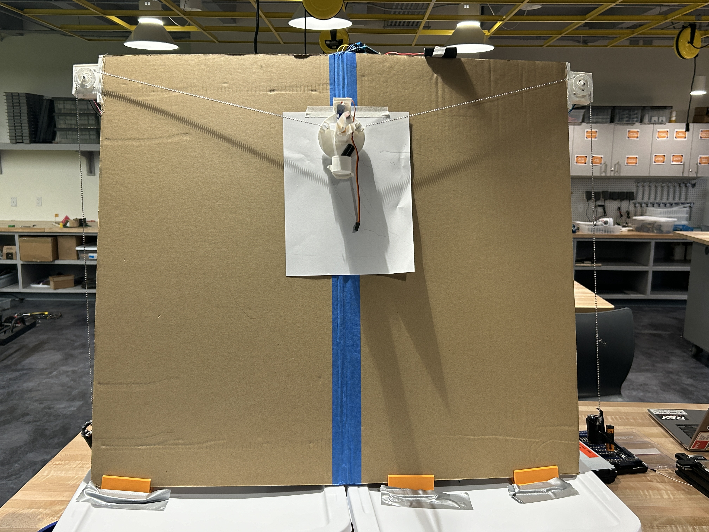
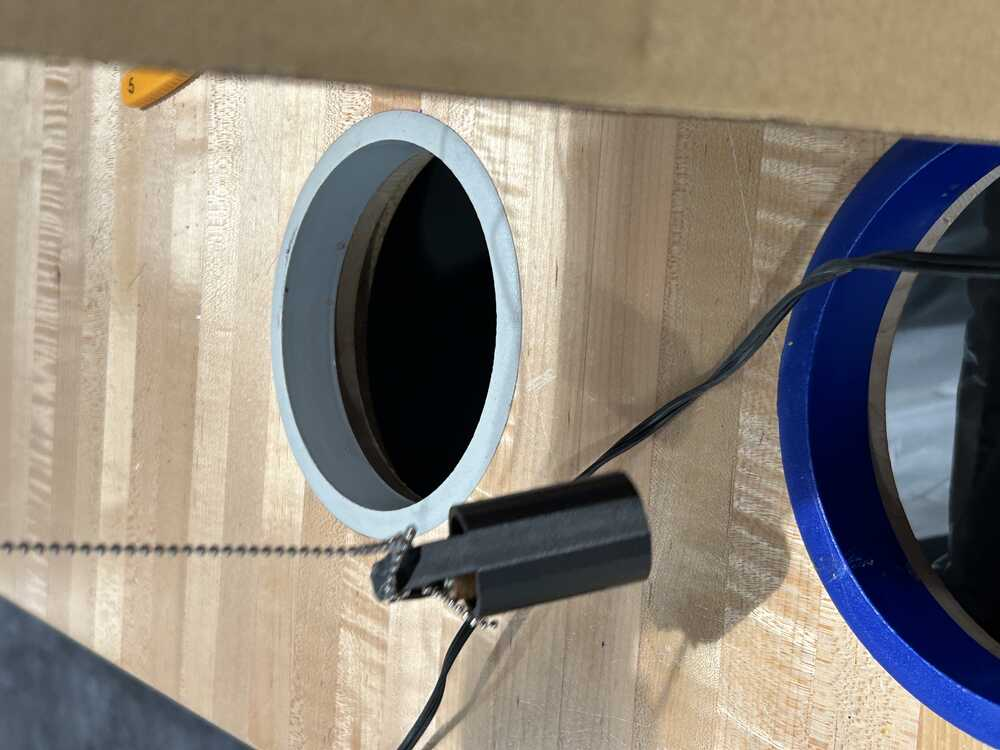
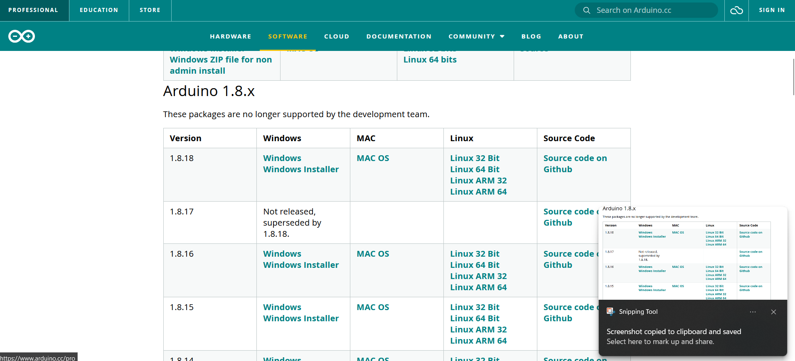
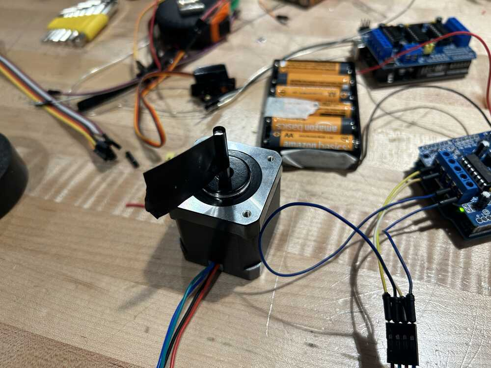

Well, to make a second loop around, it looks like we made a successful plotter after all! Though it was much more finicky than we expected it was an amazing project to learn about building these systems.
The [Sort of] Revival of the V-Plotter
This week we decided to take the dust off of an old project to be able to get a V-plotter that has been sitting around the lab to work better. I will give a spoiler off the top - it did not work well...
And the culprit of this failure is twofold - One, the tuning of the device is a little off I believe, and that is because the steppers are somewhat small for the design. And two, this thing:
The [slipping] chain holder
How did we get here?
Initially we had a v-plotter in the lab that we had been working on a while back. Though not perfect it managed to get some images out but most of our documentation was lost. A V-plotter is a simple device in concept but difficult in execution. It has two motors that will pull chains and those two chains, when in tension, will move a gondola with a pen on it to create shapes.
The math of it eludes me a little but it essentially involves altering the radius of two overlapping circles to move an object to any point in 2D space. Here is a rough description of what it is and our device itself:
And here is an image of our plotter

The chain makes really cool shadows but that is neither here nor there. Just a fun fact.
How did we make this? [Tutorials]
Making anything new requires some learning involved and we did the same thing, we followed a tutorial from Youtube. If you search on instructables there are MANY designed V-Plotters on the website.
We had most of the device built at this point and just needed to add a few weight holders for the sake of balance. So we found these on thingiverse and made it work. If you do not like the design we used hint: it does need work and we will discuss that later then you can make your own or search the plethora of designs that exist online!

With this weight added the machine was theoretically going to work well.
Step Two: Flash the Arduino Uno
Here there were a few steps that needed to get done to make the device work. First was flashing the server for a program called polargraph that has not been supported since 2017 onto the Arduino. To do this you can easily find the program in the Github above.
There is just one issue: The program does not compile in versions of Arduino past 1.8.5
Step Two point One: Revert Arduino to 1.8.5 or before
In my case Arduino 1.6 is the one that worked but luckily doing this is simple. You just have to google the IDE version you wanted and then you can go back to that edition.
This Website holds all of the versions of this that all you do is download the installer, compile and upload to the board

Step Three: Install and run Processing
In the same GitHub Folder you can install and use a program called processing. This will convert images and control the actual device. Installing is straight forward and if you follow steps in the tutorial video you can go ahead and have that program running. Here you have to set te size of your board and your paper to be able to start drawing. This has to all be done in mm. If done correctly the image ends up looking like this:
Here everything was connected but I managed to press go. Once I pressed go, nothing happened...
Debugging
With the device not even working, we needed to see why that was happening. In this case, several things were tried.
Changing the Arduino and shield and reuploading everything

Disconnecting and changing steppers. Then reconnecting the steppers.
In the end, reconnecting the steppers is what did it. They were connected wrong. It is possible the boards were part of the problem but I cannot fully be certain because once the boards were chaning things reuploaded much more smoothly.
Stepper Test 1
Stepper Test 1.5
Stepper Test 2
Gantry Move Test
Conclusions
At this point in time this device works nominally. But it keeps slipping and some work needs to be done to it.
Change the chain controls - Less Slippage
Re do the controls using timing belts
Change the steppers or stepper mounts for less slippage
The Redesign
Because the machine did not work properly with the parts we had made originally we decided to redesign the whole thing using ideas from the system we had. In essence these were the parts that needed to be redone:
This led to redesigning each of the components on Fusion 360 to be able to run the system much more reliably.
Each of the Components
The redesign of each of the components were to make the parts more robust and use M3 screws to fasten or hold together parts that needed extra support. Each of the designs are below:
First is the overall design:
Next is the top mount that will be holding the NEMA motors. This was designed to the size of one of the doors on site but you can use a pair of screws to tighten the mount and have it stable.
Following is the mount for the Pen. The hole in the center was designed to work with a Expo marker. But it also has the screw system so that you can mount and tighten to any design. One major problem with this project was that the pen kept slipping out. Which defeats the purpose of the project overall so stability here was key.
Finally the counterweight. I think with the timing belt we are using we do not truly need this part if we got creative but it worked originally so I didnt mind using it in this design as well. The slots are designed to hold AA batteries as ballast since they are heavy and readily available.
These were then printed on a Bambulabs A1 using the standard .2 mm layer height settings and Matte PLA Black. We didnt think there would be any real problems with the sizing here or material properties since they would not be under any major load.
New Prints
After reprinting the new designs we came up with a few very good models for each of our components.
The Pen Holder
The Counter Weight
The Motor Mount
Unfortunately this one did not meet expectations, there was too much of a gap between the motor mount and the motor itself and we worried it would lead to sagging or more so we redesigned it to fit the motor better and to have a slot for the circle that is on the top of stepper motors to fit better.
After a bit of quick Fusion 360 we made this change
We also noticed we had a missing component, a mount for the brain of the bot. Tom and I both agreed that having the cables hanging about was a problem that needed to be solved. So we just designed a mount so that things would not be pulled apart.
Reprinted Motor Mount
Now this reprinted motor mount was capable of standing a motor perfectly. It was satisfying screwing it in and letting it hold it stable.
The Arduino Control board also fit snugly into its mount. With that we were ready to mount this up and get it drawing just like model number one!
Processing, Tinkering, Working
Because all the designs above reworked our design flaws from before we hoped that the entire system would work better than usual but we ran into hurdles again.
The first part was that though all things were connected, the motors were not working properly again, so we went back to documentation and checked if the motor was connected properly. It was not... so we went back and reconnected the whole system. Running tests to see if the cables pulled the gantry up and down properly. With minimal testing after the wire swaps it was up and running.
The above configuration is what worked for us. And we had to make sure to reverse the pairs on one side compared to the other because if not both the motors would turn the same direction when they should turn opposite directions.
Configuration
The next phase of the configuration was setting the circumference covered in one rotation. We were using the wheels that came with the timing belts instead of designing our own. These had a diameter of about 12.12mm meaning that the motion was about 36mm per rotation. This meant it would have to turn more than its original setting to get from point A to point B.
We then ran some motion tests to make sure all went well luckily, other than some problems with the scaling, which in the end we couldnt define where the problem was, it was working smoothly.
Clearly the Vertical motion was smooth so we decided to test a drawing. We made a simple design on Illustrator and exported it as an svg. The one thing you must be sure of is to have a stroke line in your vectors. If no stroke line exists the vector will not generate on Processing.
Vector Design on Processing
The dot moving is the location of the gondola in motion and in the end it was a success!
Successful Drawing!
Here the drawing was successfully done. Though since we did not add a lift the travel lines are there. We would add a servo but we wanted to see a successful drawing first.
Files, In case you would like to make one too!
The last few files that are marked purchase are things you will need to buy to run this set up.
V-Plotters are a fun project that is a simple low hanging fruit for practicing machine design (with a great actual implementation)
Troubleshooting stepper motors can be the biggest headache
Make sure your steppers are connected correctly
Motor Shields overheat, quickly, and be careful when holding them
Having better hardware available will allow you to construct a system that uses a better control system. Though we used polar graph, GRBL, and Makelangelo are much more stable control schema
Watch your machine with testing. We launched the gondola up in the air about 3 times, to disasterous ends
Teamwork make the stress leave on building these projects.